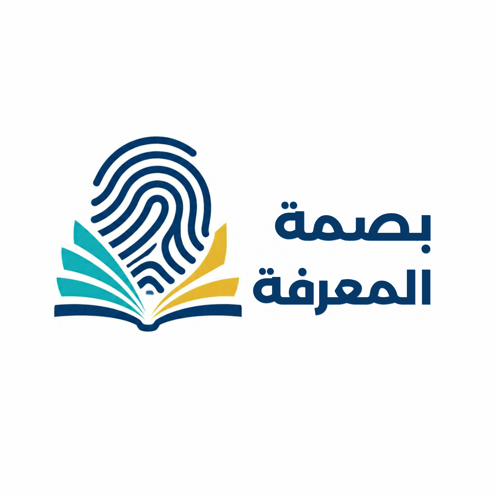
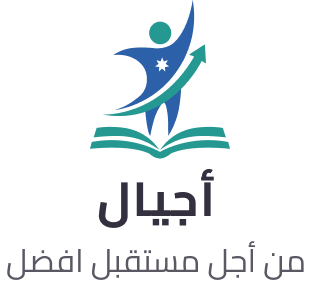
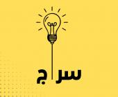
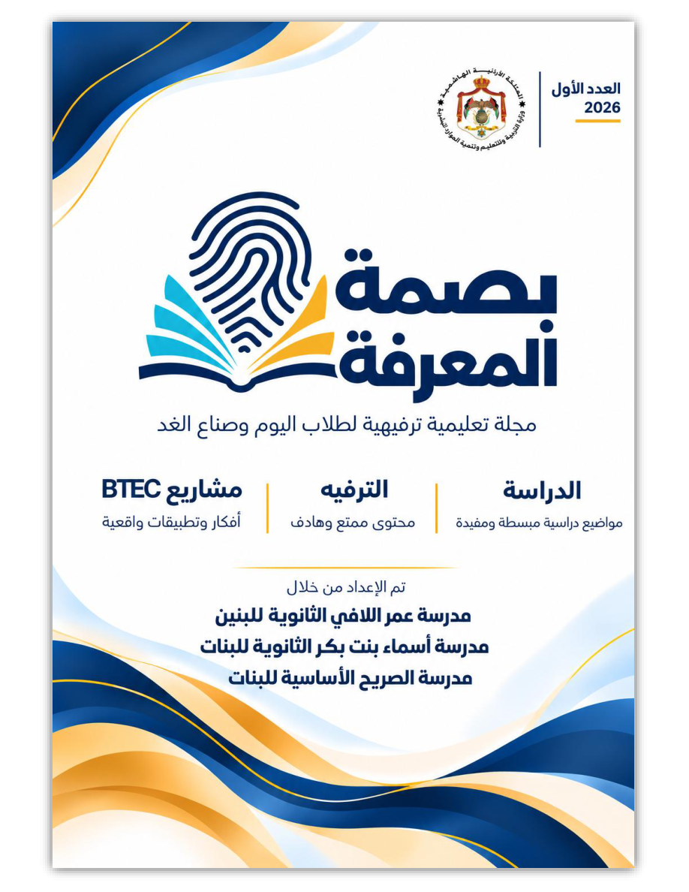

✓ ✕
سريع
صح أم خطأ
ميّز العبارات الصحيحة من غير الصحيحة.

من المعرفة إلى المهارة… ومن المدرسة إلى المستقبل
لكل طالب قدرة، ولكل معرفة أثر
اضغط في أي مكان أو مفتاح المسافة للتخطي
منصتك التعليمية التفاعلية لاكتشاف المسارات الأكاديمية والمهنية، والتعلم من خلال القراءة والألعاب والتحديات.
تعرّف إلى الخيارات المتاحة، واكتشف المجال الذي ينسجم مع ميولك واهتماماتك.
مهارات عملية، ومشروعات واقعية، وخيارات ترتبط بعالم العمل.
اكتشف المسارات ←تعلّم واكتشفمعرفة وتحليل وبحث، ومسارات تفتح آفاقًا للدراسة والتخصص.
تعرّف إلى المجالات ←اختبر نفسكأسئلة قصيرة وأنشطة تساعدك على تثبيت المعرفة وتطوير التفكير.
ابدأ التحدي ←تعرّف إلى المجالات المهنية الواردة في مواد مجلة بصمة المعرفة، والمتوافقة مع عرض مجالات BTEC: تكنولوجيا المعلومات، والهندسة، والأعمال، والتصميم والفنون التطبيقية، والزراعة، والسياحة والضيافة. تُراجع التخصصات المتاحة وشروطها حسب أحدث منشورات وزارة التربية والتعليم.
وسّع معارفك، وطوّر التفكير النقدي والبحثي، واستكشف مجالات الدراسة.
لا توجد إجابة واحدة تناسب الجميع؛ لكل مسار طبيعة تعلم وفرص مختلفة، وقد تتكامل المسارات في بعض المراحل.
| وجه المقارنة | التعليم المهني والتقني | التعليم الأكاديمي |
|---|---|---|
| طبيعة التعلم | تطبيق عملي ومهارات تخصصية | معرفة نظرية وتحليل وبحث |
| الأنشطة | مشروعات وتدريب وممارسة | دراسة وقراءة وتجارب وبحوث |
| الهدف | تطوير كفايات مهنية قابلة للتطبيق | بناء قاعدة معرفية والاستعداد للتخصص |
| اختيار المسار | يعتمد على الميول والقدرات وشروط القبول والأنظمة التعليمية المعتمدة. | |
أجب عن الأسئلة واكتشف ما تعرفه، ثم راجع الإجابات وتعلّم من أخطائك.
مجموعة أسئلة في المسارات التعليمية والتكنولوجيا ومهارات التعلم.
اضغط على «ابدأ التحدي الآن» لتظهر الأسئلة التفاعلية.
أنشطة خفيفة لتجربة المعرفة بطريقة ممتعة.
ميّز العبارات الصحيحة من غير الصحيحة.
اربط المجال بالمهارة التي تناسبه.
فكّر قليلًا واختر أفضل إجابة.
أجب عن أسئلة استرشادية حول اهتماماتك.
مساحة إرشادية قابلة للتحديث وفق التعليمات والروابط الرسمية المعتمدة.

منصة وطنية لإدارة المعلومات التربوية والمحتوى والخدمات التعليمية.

مساعد دراسي ذكي يساند الطلبة في فهم المناهج والبحث عن المعلومات التعليمية.
ملاحظة: الروابط أعلاه للمواقع الرسمية. قد تتغير الواجهات والخدمات؛ اتبع تعليمات وزارة التربية والتعليم ومدرستك.
الإصدار الأول لعام 2026 — مجلة تعليمية ترفيهية لطلاب اليوم وصنّاع الغد.

بصمة المعرفةمجلة تعليمية ترفيهية لطلاب اليوم وصنّاع الغديتناول العدد مسارات التعليم الأكاديمي والمهني والتقني، ويساعد الطالب على التفكير في ميوله وقدراته واختياراته المستقبلية.
اقرأ المجلة، جرّب التحديات، واكتشف المسار الذي يناسبك.